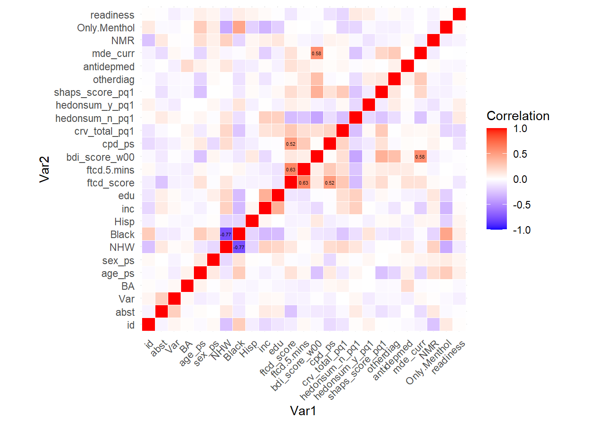

Characteristic |
Overall |
No |
Yes |
p-value 2 |
|---|---|---|---|---|
| Pharmacotherapy | <0.001 | |||
| Placebo | 136/300 (45%) | 124/236 (53%) | 12/64 (19%) | |
| Varenicline | 164/300 (55%) | 112/236 (47%) | 52/64 (81%) | |
| Psychotherapy | 0.5 | |||
| BA | 151/300 (50%) | 121/236 (51%) | 30/64 (47%) | |
| Standard | 149/300 (50%) | 115/236 (49%) | 34/64 (53%) | |
| Age | [19.00, 76.00] | [19.00, 76.00] | [23.00, 72.00] | 0.8 |
| Sex | 0.8 | |||
| Female | 165/300 (55%) | 129/236 (55%) | 36/64 (56%) | |
| Male | 135/300 (45%) | 107/236 (45%) | 28/64 (44%) | |
| Non-Hispanic White | 105/300 (35%) | 74/236 (31%) | 31/64 (48%) | 0.011 |
| Black | 157/300 (52%) | 129/236 (55%) | 28/64 (44%) | 0.12 |
| Hisp | 18/300 (6.0%) | 15/236 (6.4%) | 3/64 (4.7%) | 0.8 |
| Income | 0.6 | |||
| $20,000-35,000 | 68/297 (23%) | 56/234 (24%) | 12/63 (19%) | |
| $35,001-50,000 | 46/297 (15%) | 36/234 (15%) | 10/63 (16%) | |
| $50,001-75,000 | 38/297 (13%) | 30/234 (13%) | 8/63 (13%) | |
| Less than $20,000 | 110/297 (37%) | 88/234 (38%) | 22/63 (35%) | |
| More than $75,000 | 35/297 (12%) | 24/234 (10%) | 11/63 (17%) | |
| Unknown | 3 | 2 | 1 | |
| Education | 0.13 | |||
| College Graduate | 91/300 (30%) | 66/236 (28%) | 25/64 (39%) | |
| Grade School | 1/300 (0.3%) | 0/236 (0%) | 1/64 (1.6%) | |
| High School Graduate/GED | 76/300 (25%) | 60/236 (25%) | 16/64 (25%) | |
| Some College/Technical School | 116/300 (39%) | 97/236 (41%) | 19/64 (30%) | |
| Some High School | 16/300 (5.3%) | 13/236 (5.5%) | 3/64 (4.7%) | |
| FTCD score | 5.22 (2.14) | 5.46 (1.98) | 4.34 (2.46) | 0.002 |
| Unknown | 1 | 1 | 0 | |
| Smoking with 5 mins of waking up | 138/300 (46%) | 113/236 (48%) | 25/64 (39%) | 0.2 |
| BDI score | 18.72 (11.47) | 19.14 (11.54) | 17.19 (11.19) | 0.2 |
| Cigarettes per day | 15.15 (7.89) | 15.57 (7.81) | 13.58 (8.07) | 0.052 |
| Cigarette reward value | 7.19 (3.70) | 7.21 (3.71) | 7.09 (3.71) | >0.9 |
| Unknown | 18 | 12 | 6 | |
| Substitute reinforcers | 22.63 (19.60) | 21.90 (18.90) | 25.31 (21.96) | 0.4 |
| Complementary reinforcers | 25.43 (19.42) | 25.97 (19.27) | 23.47 (20.00) | 0.15 |
| Anhedonia | 2.25 (3.16) | 2.42 (3.36) | 1.64 (2.22) | 0.3 |
| Unknown | 3 | 3 | 0 | |
| Other lifetime DSM-5 diagnosis | 133/300 (44%) | 109/236 (46%) | 24/64 (38%) | 0.2 |
| Taking antidepressant medication | 82/300 (27%) | 65/236 (28%) | 17/64 (27%) | 0.9 |
| Current vs past MDD | 0.073 | |||
| Current | 147/300 (49%) | 122/236 (52%) | 25/64 (39%) | |
| Past | 153/300 (51%) | 114/236 (48%) | 39/64 (61%) | |
| Nicotine Metabolism Ratio | 0.36 (0.23) | 0.35 (0.22) | 0.42 (0.26) | 0.023 |
| Unknown | 21 | 15 | 6 | |
| Exclusive Mentholated Cigarette User | 178/298 (60%) | 143/234 (61%) | 35/64 (55%) | 0.4 |
| Unknown | 2 | 2 | 0 | |
| Readiness to quit smoking | 6.78 (1.24) | 6.80 (1.26) | 6.68 (1.17) | 0.4 |
| Unknown | 17 | 12 | 5 | |
| 1
n/N (%); [Min, Max]; Mean (SD) |
||||
| 2
Pearson’s Chi-squared test; Wilcoxon rank sum test; Fisher’s exact test |
||||
Project 2: Regression Analysis
Abstract
Individuals with past or present major depressive disorder (MDD) face challenges in smoking cessation, with varenicline proving more effective than nicotine replacement therapy but less so for MDD patients. A recent study found that varenicline improved abstinence rates, while behavioral activation for smoking cessation (BASC) did not, regardless of its combination with varenicline. Analyzing data from a randomized 2x2 factorial design study of 300 smokers with MDD, we identified baseline predictors of abstinence, such as FTCD score, complementary reinforcers, anhedonia, BDI score, and Nicotine Metabolite Ratio. Our model showed strong predictive ability, and moderator analysis revealed that baseline FTCD moderated the effect of BASC, with greater effectiveness in participants with lower FTCD scores.
Introduction
Over 30% of individuals with major depressive disorder (MDD) are daily smokers and face unique challenges in smoking cessation, such as heavier smoking, greater dependence, and more severe withdrawal symptoms compared to non-MDD smokers. Despite varenicline being more effective than nicotine replacement therapy (NRT) for smoking cessation, it is often under-prescribed to individuals with mental health disorders, including MDD, due to safety concerns. Research has shown that varenicline improves abstinence in MDD patients, but additional strategies, such as Behavioral Activation for Smoking Cessation (BASC), which increases reward experience and reduces avoidance, may enhance outcomes.
A recent randomized, placebo-controlled trial examined the effectiveness of varenicline combined with BASC in adults with current or past MDD. The study, using a 2x2 factorial design, found that BASC did not outperform standard treatment (ST) in promoting abstinence, with or without varenicline. However, varenicline significantly improved abstinence compared to placebo. This analysis aims to investigate whether baseline variables moderate the effect of behavioral treatment (BASC vs. ST) on end-of-treatment (EOT) abstinence and predict EOT abstinence, controlling for pharmaceutical and behavioral treatments.
To achieve these goals, the study employs regularized linear models, particularly the Lasso method, to perform variable selection. The Lasso method shrinks some coefficients to zero, identifying the most relevant predictors, while balancing model accuracy and multicollinearity. The analysis will also consider more advanced techniques, like relaxed Lasso and \(L_0 + L_2\) regularization, to optimize the selection of variables without increasing bias
Exploratory Data Analysis
The study consists of baseline covariates, with the exception of abstinence, which is the only outcome variable. Several variables are binary, including pharmacotherapy (Var), psychotherapy (BA), and sex (sex_ps). Race and ethnicity are also considered binary, with indicators for non-Hispanic white (NHW), Black (Black), and Hispanic (Hisp). Additional binary variables include smoking behavior, specifically whether the participant smokes within five minutes of waking up (ftcd.5.mins), lifetime DSM-5 diagnosis (otherdiag), antidepressant medication use (antidepmed), current or past major depressive disorder (mde_curr), and exclusive use of menthol cigarettes (Only.Menthol).
Numeric variables in the study include age (age_ps), cigarettes smoked per day (cpd_ps), and nicotine metabolism ratio (NMR). Age and cigarettes per day provide information on the participant’s smoking habits, while the nicotine metabolism ratio (NMR) serves as a biomarker indicating how quickly nicotine is metabolized, with higher values reflecting faster metabolism.
In addition to these numeric and binary variables, some variables are treated as ordinal. For instance, income (inc) and education level (edu) are considered ordinal, providing a ranked scale of these demographic factors. Several other variables are treated as numeric and include measures of smoking dependence and mental health. The Fagerström Test for Cigarette Dependence score (ftcd_score) measures nicotine dependence, with higher scores indicating greater physical dependence on nicotine. The Beck Depression Inventory score (bdi_score_pq1) assesses the severity of depression, with higher scores signifying more severe symptoms of depression.
The study also includes variables related to the rewarding aspects of smoking. The cigarette reward value (crv_total_pg1) measures the participant’s preference for smoking over other rewarding activities. Reinforcer scores, including substitute (hedonsum_n_pq1) and complementary (hedonsum_y_pq1) reinforcers, are based on a Pleasant Events Schedule, assessing the frequency and enjoyment of activities associated with smoking. Anhedonia, or the inability to experience pleasure, is measured by the Snaith-Hamilton Pleasure Scale (shaps_score_pg1), with higher scores indicating greater enjoyment of typically rewarding experiences.
Lastly, readiness to quit smoking is measured by the variable readiness, which gauges the participant’s motivation and intention to stop smoking. The nicotine metabolism ratio (NMR) is an important biomarker in this study, as it provides insight into how quickly an individual metabolizes nicotine, which could impact their response to smoking cessation treatments.
Summary of Variables
The summary statistics, generated by Table 1, provide an overview of all variables, both overall and grouped by abstinence status. Pearson’s chi-square tests were performed to assess differences between participants with and without abstinence. Significant differences were observed for variables such as Var, NHW, ftcd_score, and NMR, which represent pharmacotherapy use, non-Hispanic white ethnicity, smoking habits upon waking, and nicotine metabolism, respectively. These findings highlight potential predictors of abstinence.
We observed that the discrete variables edu and inc have multiple levels, but their sample sizes are unevenly distributed across levels, with some levels having very few or excessively large observations. This imbalance could impact the stability of our model training. To address this, we combined the levels of these variables, reducing edu and inc to three levels each. Specifically, inc was recategorized into less than $20,000, $20,000–50,000, and more than $50,000, while edu was grouped into High School, Some College/Technical School, and College Graduate.
Additionally, we identified missing data for several variables, including Cigarette reward value, NMR, and readiness, with 18, 21, and 17 missing values, respectively. Since only 241 complete cases are available, deleting cases with missing values would risk underfitting due to the limited sample size. Therefore, we opted for multiple imputation to address the missing data, ensuring data completeness. Upon examining the missing data pattern, we determined that the data are missing completely at random (MCAR), making multiple imputation an appropriate method.
In the regression analysis, we treated certain ordinal variables, such as FTCD score, as continuous variables. However, because the intervals between their levels are not equidistant, this approach might introduce bias. To mitigate this, we applied polynomial fits for these variables, allowing for nonlinear relationships between their log-odds ratios and the outcome.
Finally, we observed an imbalanced distribution in the outcome variable abst, with a majority of participants (236) failing to achieve smoking cessation and only a small subset (64) successfully quitting. This imbalance could impact model training. To address this issue, we used stratified sampling during the split of training and testing datasets. This approach ensures that the distribution of abst remains similar across both sets, enhancing the model’s stability.
Correlation between Variables
We then calculated the correlations between covariates, labeling those with magnitudes higher than 0.5 with their respective values, as shown in Figure 1. The resulting correlation matrix reveals that most continuous variables exhibit low to moderate correlations, indicating that multicollinearity is unlikely to pose a significant issue in our analysis. This observation suggests that each continuous variable contributes unique information, whether about participants’ physical or mental characteristics, with minimal redundancy.
However, we identified certain covariates with notably high correlations. For example, NHW and Black demonstrated a correlation coefficient of approximately 0.77, indicating a strong inverse relationship. This high correlation suggests that these variables may be capturing overlapping or redundant information, which could introduce multicollinearity issues in our model. Such redundancy can obscure the true relationship between other predictors and the outcome, potentially distorting model estimates.
To mitigate this issue, we carefully evaluated the importance and interpretability of these variables. Given their high correlation, we decided to exclude the NHW variable from further analysis. By removing this redundancy, we aim to enhance the robustness of our model and ensure that it accurately captures the unique contributions of the remaining covariates.

Data Preprocessing
There were 241 complete cases, meaning 59 records had some degree of missing data. This reduction in sample size highlights the need for imputation to preserve the dataset’s utility. After inspecting the missing data patterns, we performed Little’s test to evaluate whether the data were missing completely at random (MCAR). The null hypothesis for this test posits that the data are not MCAR. The test yielded a p-value greater than 0.05, indicating that we could not reject the null hypothesis. Thus, we concluded that there is evidence supporting the data being MCAR.
To address missing data while maintaining the sample size, we impute data using the mice package, which employs multiple imputation to estimate missing values based on observed data. In our study, it generates five complete datasets, each with imputed values, to preserve the original sample size and enhance the reliability of our analysis. Further analysis will be conducted separately on each imputed data set and then summarized to produce a final result.
Model fitting
In this section, we focus on fitting a model to identify baseline variables that serve as predictors of abstinence. The analysis included all baseline covariates as potential predictors, but we limited the model to main effects only, deliberately excluding interaction terms to maintain simplicity and interpretability.
To account for the treatment of certain ordinal variables as continuous, we employed third-order polynomial regression. This approach allows us to capture potential nonlinear relationships between these ordinal variables and the outcome, without assuming equal spacing between levels. Each imputed dataset was analyzed independently to ensure robust results that account for variability introduced during the imputation process.
Given the large number of covariates in the dataset, there is a risk of overfitting, especially with a relatively small sample size. To address this, we utilized Lasso (Least Absolute Shrinkage and Selection Operator) regression for variable selection. Lasso imposes a penalty on the absolute size of the regression coefficients, effectively shrinking some coefficients to zero and excluding less important variables from the final model. This method helps to simplify the model and improve its generalizability by selecting only the most relevant predictors.
To evaluate model performance, we used the Area Under the Curve (AUC) of the Receiver Operating Characteristic (ROC) curve as our primary metric. For each imputed dataset, a separate model was fitted, and the AUC was calculated independently. These individual AUC values were then averaged to provide a comprehensive measure of the model’s discriminative ability across all imputations.
For visualizing the ROC curve, we adopted a slightly different approach. We first calculated the specificity and sensitivity for each of the five models at various thresholds. These values were then interpolated to generate a smooth curve for each model. Finally, the interpolated ROC curves were averaged to produce a single curve that represents the overall performance across different false positive rates (FPR). This ensures a clear and interpretable depiction of the model’s true positive rate (TPR) under varying conditions.
To ensure a more robust and stable estimation of the coefficients in our analysis, we aggregate the results obtained from the five imputed datasets. Specifically, we take the median of each coefficient across these datasets. The median is chosen as it provides a measure of central tendency that is less sensitive to extreme values or potential outliers in the imputed datasets, thereby offering a more reliable representation of the coefficients. Once the median coefficients are obtained, we transform them using exponentiation to interpret them in terms of odds ratios (OR).
Main effects of baseline covariates

The model’s ability to discriminate between outcomes was evaluated using ROC curves. The Lasso model exhibited strong discriminative performance, achieving an AUC of 0.70 on the testing set (Figure 2).
We selected variables that were chosen at least three times across the five imputed datasets and used their median as the summarized estimate.
Five significant baseline predictors of abstinence were identified: ftcd_score, Var, bdi_score_w00, hedonsum_y_pq1, and NMR (Table 2). Treatment with varenicline showed a strong positive association with abstinence (OR = 1.78), indicating that participants receiving varenicline had nearly 1.78 times higher odds of achieving abstinence compared to those receiving placebo. This result aligns with prior literature supporting varenicline’s efficacy.
Additionally, nicotine metabolism rate (NMR) was positively associated with abstinence outcomes. Each unit increase in logNMR was linked to a 1.07 increase in the odds of achieving abstinence. The predictive value of NMR is plausible given that nicotine metabolism rate reflects how quickly individuals metabolize nicotine. Faster metabolizers often experience more intense withdrawal symptoms [@liakoni2019effects] and greater physical dependence and reward [@sofuoglu2012rapid], which can make abstinence more challenging. This finding regarding NMR diverges from some earlier studies that suggested faster metabolizers typically have greater difficulty achieving cessation. However, the relationship between nicotine metabolism and cessation outcomes is complex and may depend on the specific treatment approach. This highlights the need for further research to clarify these dynamics.
An odds ratio (OR) of 0.95 for the ftcd_score on smoking abstinence suggests that for each one-unit increase in the FTCD score, the odds of achieving smoking abstinence decrease by 5%. In other words, higher levels of nicotine dependence, as measured by the FTCD score, are associated with slightly lower likelihoods of successfully quitting smoking.
| Predictor | Estimate | OR |
|---|---|---|
| NMR | 0.0654449 | 1.0676339 |
| Var | 0.5786819 | 1.7836858 |
| ftcd_score | -0.0510155 | 0.9502639 |
| poly(NMR, 3)1 | 0.0602207 | 1.0620709 |
| poly(bdi_score_w00, 3)3 | 0.0966681 | 1.1014947 |
| poly(ftcd_score, 3)1 | -0.0111187 | 0.9889429 |
| poly(ftcd_score, 3)2 | 0.5810861 | 1.7879793 |
| poly(ftcd_score, 3)3 | -1.4339966 | 0.2383544 |
| poly(hedonsum_y_pq1, 3)3 | -0.0494481 | 0.9517546 |
Polynomial variables are challenging to interpret. Both the FTCD score (ftcd_score) and complementary reinforcer score (hedonsum_y_pq1) showed significant non-linear relationships with abstinence.
It shows that a cubic relationship between FTCD score and abstinence, where the highest abstinence probability occurs at low dependence levels, decreasing non-linearly as dependence increases. Similar for hedonsum_y_pq1. A higher hedonsum_y_pq1 score, reflecting greater enjoyment or frequency of smoking-associated activities, likely makes quitting harder. Such participants may face more triggers to smoke and fewer non-smoking sources of reward. These findings highlight the complex, non-linear relationships between nicotine dependence, smoking-associated activities, and abstinence.
Moderator effects of baseline covariates
We investigated whether baseline variables moderate the effect of behavioral treatment (BASC vs. ST) on end-of-treatment (EOT) abstinence. To address this, our model included baseline covariates as main effects and also considered their interactions (and higher-order terms) with behavioral treatment to capture potential moderation effects.
For this analysis, we performed lasso regression with cross-validation separately on each of the five imputed datasets. Variables that were selected at least three times across the five imputed datasets were retained, and their medians were used as the summarized estimates.
To evaluate the model’s discriminative ability, we used the average area under the curve (AUC) as the primary metric. Additionally, the receiver operating characteristic (ROC) curve was summarized using interpolation across the datasets to visualize the model’s performance.
To our surprise, the Lasso model exhibited strong discriminative performance, achieving an AUC of 0.72 on the testing set while still maintaining a high AUC of 0.73 on the training set (Figure 3). This result suggests that the model effectively captures the interaction effects between baseline variables and behavioral treatment, enhancing its predictive ability. In addition to findings consistent with the previously identified main effects, our moderator analysis revealed that FTCD score significantly moderated the effect of BA treatment on abstinence outcomes (Table 3). Specifically, participants with lower FTCD scores showed a greater response to BASC treatment, with a higher likelihood of achieving abstinence compared to those with higher FTCD scores. This finding suggests that BASC may be more effective for individuals with lower levels of nicotine dependence, as measured by the FTCD score. The interaction between FTCD score and BASC treatment highlights the importance of considering individual differences in smoking behavior and dependence when designing smoking cessation interventions. By tailoring treatments to participants’ specific needs and characteristics, such as their level of nicotine dependence, we can optimize the effectiveness of smoking cessation programs and improve outcomes for individuals with MDD.
| Predictor | Estimate | OR |
|---|---|---|
| BA:poly(ftcd_score, 3)1 | -0.0315138 | 0.9689776 |
| NMR | 0.0115785 | 1.0116457 |
| Var | 0.4162479 | 1.5162618 |
| ftcd_score | -0.0442767 | 0.9566892 |
| poly(NMR, 3)1 | 0.0264628 | 1.0268160 |
| poly(cpd_ps, 3)3 | -0.0015932 | 0.9984081 |
| poly(ftcd_score, 3)1 | 0.0000000 | 1.0000000 |
| poly(ftcd_score, 3)3 | -0.5231170 | 0.5926703 |
| poly(hedonsum_y_pq1, 3)3 | -0.2567176 | 0.7735867 |
Discussion
In this reanalysis of the BASC-Varenicline trial data, we identified several key predictors of smoking cessation success among individuals with current or past major depressive disorder (MDD). Our primary analysis confirmed varenicline’s strong positive effect on abstinence, consistent with its established efficacy. Additionally, we uncovered complex non-linear relationships between cessation success and baseline characteristics, including nicotine dependence, FTCD score, and complementary reinforcement. Notably, higher nicotine metabolism rates were associated with improved cessation outcomes. This finding diverges from some prior research, underscoring the need for further investigation into the relationship between nicotine metabolism and cessation outcomes.
Our moderator analysis provided particularly valuable clinical insights. We observed that the effectiveness of Behavioral Activation (BA) treatment was significantly moderated by FTCD score. Specifically, BA treatment yielded better outcomes for participants with lower levels of anhedonia, as indicated by their FTCD scores. This interaction suggests that individuals with less severe nicotine dependence may respond more favorably to behavioral interventions like BA, while those with higher dependence might require additional or alternative strategies, such as pharmacotherapy, to enhance their chances of quitting successfully.
Several limitations of our analysis warrant careful consideration. First, the relatively small sample size constrained our analytical approach. For instance, Hispanic ethnicity data had to be excluded due to insufficient representation (n=18), and educational and income categories were grouped to ensure model convergence. Second, the class imbalance in abstinence outcomes posed challenges for model fitting, particularly in the moderator analysis, likely contributing to reduced prediction accuracy at higher probability ranges. This imbalance also necessitated the use of multiple imputation to handle missing data, which, while essential, introduced the potential for information leakage during cross-validation.
Third, convergence issues stemming from the small sample size and the inclusion of numerous dichotomous variables limited our ability to employ more advanced regularization techniques. The proliferation of parameters forced us to restrict the number of terms in our model, which may have constrained the exploration of potential predictors and moderators.
Moving forward, incorporating expert knowledge or prior evidence into the variable screening process could help refine the model by pre-reducing the number of parameters and identifying the most promising predictors and moderators. This approach may enhance the robustness and interpretability of the findings, providing stronger guidance for personalized smoking cessation interventions.
References
Code Appendix
library(gtsummary)
library(gt)
library(tidyverse)
library(ggplot2)
library(reshape2)
library(mice)
library(glmnet)
library(pROC)
library(kableExtra)
library(patchwork)
library(caret)
# Select continuous variables
df <- read.csv("project2.csv")
# Select continuous variables related to 'pq1' and other specific columns
con_var <- df %>%
select(contains("pq1"), "age_ps", "ftcd_score",
"bdi_score_w00", "cpd_ps", "NMR", "readiness") %>%
names() # Get the column names of the selected continuous variables
# Select categorical variables by excluding 'id' and continuous variables
cat_var <- df %>%
select(-id, -all_of(con_var)) %>% # Exclude 'id' and continuous variables (con_var)
names() # Get the column names of the selected categorical variables
# Data transformation and summarization using `mutate` and `tbl_summary`
df %>%
mutate(across(c(abst, NHW, Black,
Hisp, `ftcd.5.mins`, Only.Menthol,
otherdiag, antidepmed), ~ case_when(
is.na(.) ~ NA, # Keep NA values as NA
. == 0 ~ "No", # Change 0 to "No"
. == 1 ~ "Yes" # Change 1 to "Yes"
)),
# Transform 'Var' variable from numeric to categorical
Var = case_when(is.na(Var) ~ NA,
Var == 0 ~ "Placebo", # 0 -> "Placebo"
Var == 1 ~ "Varenicline"), # 1 -> "Varenicline"
# Transform 'BA' variable from numeric to categorical
BA = case_when(is.na(BA) ~ NA,
BA == 0 ~ "Standard", # 0 -> "Standard"
BA == 1 ~ "BA"), # 1 -> "BA"
# Transform 'sex_ps' variable from numeric to categorical
sex_ps = case_when(is.na(sex_ps) ~ NA,
sex_ps == 1 ~ "Male", # 1 -> "Male"
sex_ps == 2 ~ "Female"), # 2 -> "Female"
# Transform 'mde_curr' variable from numeric to categorical
mde_curr = case_when(is.na(mde_curr) ~ NA,
mde_curr == 0 ~ "Past", # 0 -> "Past"
mde_curr == 1 ~ "Current"), # 1 -> "Current"
# Transform 'inc' variable into income brackets
inc = case_when(is.na(inc) ~ NA,
inc == 1 ~ "Less than $20,000", # 1 -> "Less than $20,000"
inc == 2 ~ "$20,000-35,000", # 2 -> "$20,000-35,000"
inc == 3 ~ "$35,001-50,000", # 3 -> "$35,001-50,000"
inc == 4 ~ "$50,001-75,000", # 4 -> "$50,001-75,000"
inc == 5 ~ "More than $75,000"), # 5 -> "More than $75,000"
# Transform 'edu' variable into education levels
edu = case_when(is.na(edu) ~ NA,
edu == 1 ~ "Grade School", # 1 -> "Grade School"
edu == 2 ~ "Some High School", # 2 -> "Some High School"
edu == 3 ~ "High School Graduate/GED", # 3 -> "High School Graduate/GED"
edu == 4 ~ "Some College/Technical School", # 4 -> "Some College/Technical School"
edu == 5 ~ "College Graduate") # 5 -> "College Graduate"
) %>%
# Remove 'id' column before summarizing the data
select(-id) %>%
# Generate summary statistics using `tbl_summary`
tbl_summary(
by = "abst", # Group the summary by 'abst' (abstinence) variable
type = list(readiness="continuous"), # Specify 'readiness' as continuous
statistic = list(
age_ps ~ "[{min}, {max}]", # For 'age_ps', display the range (min, max)
all_of(setdiff(con_var, "age_ps")) ~ "{mean} ({sd})", # For other continuous variables, display mean and standard deviation
all_of(setdiff(cat_var, "abst")) ~ "{n}/{N} ({p}%)" # For categorical variables, display counts and percentages
),
missing = "ifany", # Show missing data if any exist
digits = list(con_var ~ c(2, 2)), # Format continuous variables to 2 decimal places
# Add custom labels for each variable in the dataset
label = list(
abst = "Abstinence", Var = "Pharmacotherapy",
BA = "Psychotherapy", age_ps = "Age", sex_ps = "Sex",
NHW = "Non-Hispanic White", inc = "Income",
edu = "Education", ftcd_score = "FTCD score",
ftcd.5.mins = "Smoking with 5 mins of waking up",
bdi_score_w00 = "BDI score", cpd_ps = "Cigarettes per day",
crv_total_pq1 = "Cigarette reward value",
hedonsum_n_pq1 = "Substitute reinforcers",
hedonsum_y_pq1 = "Complementary reinforcers",
shaps_score_pq1 = "Anhedonia",
otherdiag = "Other lifetime DSM-5 diagnosis",
antidepmed = "Taking antidepressant medication",
mde_curr = "Current vs past MDD",
NMR = "Nicotine Metabolism Ratio",
Only.Menthol = "Exclusive Mentholated Cigarette User",
readiness = "Readiness to quit smoking"
)
) %>%
# Add overall summary statistics
add_overall() %>%
# Add p-values for statistical comparisons between groups
add_p() # Add p-values for statistical significance
# Select continuous variables and compute the correlation matrix
df %>%
# select(con_var) %>% # This line is commented out but would select the continuous variables
cor(use="complete.obs") %>% # Compute correlation matrix, ignoring missing values
melt() %>% # Reshape the correlation matrix into a long format (from wide to long)
mutate(text = ifelse(abs(value) > 0.5 & value != 1, # Create a label for correlation values greater than 0.5 (ignores perfect correlation)
sprintf("%.2f", value), "")) %>% # Format the correlation values to 2 decimal places
# Create a heatmap using ggplot
ggplot(aes(Var1, Var2, fill = value)) +
geom_tile(color = "white") + # Create tiles for the heatmap with white borders
scale_fill_gradient2(low = "blue", high = "red", mid = "white",
midpoint = 0, limit = c(-1, 1), space = "Lab", # Set color gradient: blue for negative, red for positive, white for 0
name = "Correlation") + # Label the color scale as "Correlation"
geom_text(aes(label = text), color = "black", size = 1.5) + # Add correlation values as text on the heatmap
theme_minimal() + # Use a minimal theme for the plot
theme(axis.text.x = element_text(angle = 45, vjust = 1, hjust = 1)) + # Rotate x-axis labels by 45 degrees for readability
coord_fixed() # Fix the aspect ratio to ensure the heatmap is square-shaped
# Set random seed for reproducibility
set.seed(2)
# Impute missing values using the `mice` package and log-transform NMR
imp <- df %>%
mutate(NMR = log(NMR), # Log-transform 'NMR'
inc = case_when(is.na(inc) ~ NA, # Recode 'inc' variable into 3 categories
inc == 1 ~ 1, # 1 -> 1
inc == 3 | inc == 2 ~ 2, # 2 or 3 -> 2
inc > 3 ~ 3), # values greater than 3 -> 3
edu = case_when(is.na(edu) ~ NA, # Recode 'edu' variable into 3 categories
edu <= 3 ~ 1, # edu <= 3 -> 1
edu == 4 ~ 2, # edu == 4 -> 2
edu == 5 ~ 3)) %>% # edu == 5 -> 3
select(-id, -NHW, -Hisp) %>% # Remove 'id', 'NHW', and 'Hisp' columns
mice(m=5, printFlag=F) # Impute missing values using 5 imputed datasets
# Initialize empty data structures to store results
df.roc.train = df.roc.test = data.frame() # Empty data frames for ROC results
auc.train = auc.test = c() # Empty vectors to store AUC for training and testing
coeff = data.frame() # Empty data frame to store coefficients from each fold
# Perform 5-fold cross-validation
for (m in 1:5) {
df.temp <- imp %>%
complete(action = m) # Get the m-th imputed dataset
N <- nrow(df.temp) # Get the number of rows in the imputed dataset
# Randomly split the data into training (80%) and test (20%) sets
idx_train <- createDataPartition(df.temp$abst, p = 0.8, list = FALSE) # Create partition
train <- df.temp[idx_train, ] # Training set
test <- df.temp[-idx_train, ] # Testing set
# Create the design matrix (X) for the training set
fmla <- as.formula(paste("abst ~ 0 + . +", # Formula for logistic regression
paste0("poly(", con_var, ", 3)", collapse = " + "))) # Include polynomial terms for continuous variables
# Prepare training data (X.train and Y.train)
X.train <- model.matrix(fmla, data=train) # Design matrix for predictors
Y.train <- factor(train$abst) # Response variable (abstinence) as a factor
# Fit a lasso regression model using cross-validation (cv.glmnet)
cv.lasso <- cv.glmnet(X.train, Y.train, alpha = 1, # Lasso regularization (alpha=1)
family="binomial") # Binomial logistic regression
# Store the coefficients from the model for each fold
coeff <- data.frame(coef = matrix(coef(cv.lasso)),
term = rownames(coef(cv.lasso)),
fold = m) %>%
rbind(coeff) # Combine coefficients for each fold
# Compute ROC curve for training data
roc.train <- roc(Y.train,
cv.lasso %>%
predict(X.train, type="response") %>%
as.vector) # Get predicted probabilities from the model
# Create a data frame for ROC results in training set
df.roc.train <- data.frame(
fpr = seq(0, 1, by = 0.01), # False positive rate
tpr = approx(roc.train$specificities, # True positive rate
roc.train$sensitivities,
xout = seq(0, 1, by = 0.01),
rule = 2)$y, # Interpolate the TPR values
fold = m) %>%
rbind(df.roc.train) # Append the ROC data for the current fold
# Store the AUC for the training set
auc.train = c(auc(roc.train), auc.train)
# Prepare test data (X.test and Y.test)
X.test <- model.matrix(fmla, data=test) # Design matrix for test data
Y.test <- test$abst # Response variable for test data
# Compute ROC curve for test data
roc.test <- roc(Y.test,
cv.lasso %>%
predict(X.test, type="response") %>%
as.vector) # Get predicted probabilities for test data
# Create a data frame for ROC results in testing set
df.roc.test <- data.frame(
fpr = seq(0, 1, by = 0.01), # False positive rate
tpr = approx(roc.test$specificities, # True positive rate
roc.test$sensitivities,
xout = seq(0, 1, by = 0.01),
ties = "mean", rule = 2)$y, # Interpolate the TPR values
fold = m) %>%
rbind(df.roc.test) # Append the ROC data for the current fold
# Store the AUC for the test set
auc.test = c(auc(roc.test), auc.test)
}
# Calculate the average coefficients across all folds
coeff <- coeff %>%
group_by(term) %>%
summarise(coef = mean(coef)) # Compute the mean of coefficients for each term
# Summarize the training set ROC data
df.roc.train %>%
group_by(fpr) %>% # Group by false positive rate (fpr)
summarise(
tpr = mean(tpr), # Calculate the mean true positive rate (tpr) for each fpr
tpr_lower = quantile(tpr, probs = 0.025), # Compute the 2.5th percentile of tpr for confidence intervals
tpr_upper = quantile(tpr, probs = 0.975) # Compute the 97.5th percentile of tpr for confidence intervals
) %>%
ggplot(aes(x = fpr, y = tpr)) + # Plot the mean tpr against fpr for the training set
geom_line(aes(col = "Training"), linewidth = 1) + # Plot the training ROC curve in red with linewidth of 1
# Add testing set ROC curve by summarizing the testing data
geom_line(data = df.roc.test %>%
group_by(fpr) %>% # Group by false positive rate (fpr) for the test set
summarise(
tpr = mean(tpr), # Mean true positive rate for test set
tpr_lower = quantile(tpr, probs = 0.025), # 2.5th percentile of tpr for CI
tpr_upper = quantile(tpr, probs = 0.975) # 97.5th percentile of tpr for CI
),
aes(col = "Testing"), linewidth = 1) + # Plot the testing ROC curve in blue with linewidth of 1
# Add labels and aesthetics to the plot
labs(
x = "False Positive Rate", # Label for the x-axis
y = "True Positive Rate", # Label for the y-axis
col = "Data set" # Legend title for color
) +
coord_fixed() + # Ensure equal scaling for both axes (aspect ratio = 1)
# Customize the colors for the training and testing sets and add AUC values to the legend
scale_color_manual(values = c("Training" = "red", "Testing" = "blue"),
labels = c(
sprintf("Testing Set (AUC = %.2f)", mean(auc.test)), # AUC for the testing set
sprintf("Training Set (AUC = %.2f)", mean(auc.train)) # AUC for the training set
))
# Filter and transform the coefficients from the lasso regression model
coeff[-1, ] %>% # Exclude the first row (intercept term)
# Filter for coefficients with absolute values greater than 0.01
filter(abs(coef) > 0.01) %>%
# Compute the Odds Ratios (OR) by exponentiating the coefficients
mutate(OR = exp(coef)) %>%
# Rename the columns for better clarity: "term" to "Predictor" and "coef" to "Estimate"
rename("Predictor" = term, "Estimate" = coef) %>%
# Create a table of the results using kable
kable() %>%
# Style the table with kable_styling: Centered and not full width
kable_styling(full_width = F, position = "center")
# Set the seed for reproducibility
set.seed(2)
# Initialize data structures for storing results
df.roc.train = df.roc.test = data.frame() # Empty data frames for ROC curves
auc.train = auc.test = c() # Vectors to store AUC values for training and testing
coeff = data.frame() # Data frame to store the coefficients from the lasso model
# Loop through each imputation (m = 1 to 5)
for (m in 1:5) {
# Retrieve the completed dataset for the current imputation (m)
df.temp <- imp %>% complete(action = m)
N <- nrow(df.temp) # Get the number of rows in the imputed dataset
# Randomly sample 80% of the data for the training set
idx_train <- createDataPartition(df.temp$abst, p = 0.8, list = FALSE)
train <- df.temp[idx_train, ] # Training data
test <- df.temp[-idx_train, ] # Test data
# Create the design matrix (X) for the training set, including interactions for 'BA' and 'Var'
fmla <- as.formula(paste("abst ~ 0 + BA * (.) +",
paste0("poly(", con_var, ", 3)", collapse = " + "), # Add cubic terms for continuous variables
"+ BA * (", paste0("poly(", con_var, ", 3)", collapse = " + "), ")")) # Interaction terms
X.train <- model.matrix(fmla, data = train) # Create the design matrix for training
Y.train <- factor(train$abst) # Outcome variable as a factor
# Fit a lasso regression model (cv.glmnet performs cross-validation for alpha = 1, lasso)
cv.lasso <- cv.glmnet(X.train, Y.train, alpha = 1, family = "binomial")
# Store the coefficients for each fold
coeff <- data.frame(coef = matrix(coef(cv.lasso)), term = rownames(coef(cv.lasso)), fold = m) %>%
rbind(coeff)
# Calculate the ROC curve for the training set
roc.train <- roc(Y.train, cv.lasso %>% predict(X.train, type = "response") %>% as.vector)
# Store the ROC curve data for plotting (true positive rate vs false positive rate)
df.roc.train <- data.frame(
fpr = seq(0, 1, by = 0.01), # False positive rate (FPR) sequence from 0 to 1
tpr = approx(roc.train$specificities,
roc.train$sensitivities,
xout = seq(0, 1, by = 0.01),
rule = 2)$y, # Interpolate true positive rate (TPR) for FPR
fold = m
) %>%
rbind(df.roc.train)
# Store the AUC for the training set
auc.train = c(auc(roc.train), auc.train)
# Create the design matrix for the test set and predict probabilities
X.test <- model.matrix(fmla, data = test)
Y.test <- test$abst
roc.test <- roc(Y.test, cv.lasso %>% predict(X.test, type = "response") %>% as.vector)
# Store the ROC curve data for the test set
df.roc.test <- data.frame(
fpr = seq(0, 1, by = 0.01),
tpr = approx(roc.test$specificities,
roc.test$sensitivities,
xout = seq(0, 1, by = 0.01),
ties = "mean", rule = 2)$y,
fold = m
) %>%
rbind(df.roc.test)
# Store the AUC for the test set
auc.test = c(auc(roc.test), auc.test)
}
# Average the coefficients across all folds
coeff <- coeff %>%
group_by(term) %>%
summarise(coef = mean(coef)) # Compute the mean coefficient across folds
# Compute the mean, lower (2.5th percentile), and upper (97.5th percentile) of TPR for each FPR value in the training set
df.roc.train %>%
group_by(fpr) %>%
summarise(
tpr = mean(tpr), # Mean true positive rate
tpr_lower = quantile(tpr, probs = 0.025), # 2.5th percentile for TPR
tpr_upper = quantile(tpr, probs = 0.975) # 97.5th percentile for TPR
) %>%
ggplot(aes(x = fpr, y = tpr)) + # Plot FPR vs mean TPR
geom_line(aes(col = "Training"), linewidth = 1) + # Plot training data ROC curve with red color
# Compute and plot the mean ROC curve for the testing set
geom_line(
data = df.roc.test %>%
group_by(fpr) %>%
summarise(
tpr = mean(tpr), # Mean true positive rate for testing
tpr_lower = quantile(tpr, probs = 0.025), # 2.5th percentile for TPR
tpr_upper = quantile(tpr, probs = 0.975) # 97.5th percentile for TPR
),
aes(col = "Testing"), linewidth = 1 # Plot testing data ROC curve with blue color
) +
labs(
title = "Mean ROC Curves of Lasso Regression", # Add title
x = "False Positive Rate", # Label for the x-axis
y = "True Positive Rate", # Label for the y-axis
col = "Data set" # Legend label for the data set
) +
coord_fixed() + # Fix the aspect ratio to make sure the plot is square
scale_color_manual(
values = c("Training" = "red", "Testing" = "blue"), # Set colors for training and testing
labels = c(
sprintf("Testing Set (AUC = %.2f)", mean(auc.test)), # Label for the testing set with its AUC
sprintf("Training Set (AUC = %.2f)", mean(auc.train)) # Label for the training set with its AUC
)
)
# Remove the intercept (first row) and filter out coefficients that are equal to 0
coeff[-1, ] %>%
filter(coef != 0) %>% # Keep only non-zero coefficients
mutate(OR = exp(coef)) %>% # Calculate the Odds Ratio (OR) by exponentiating the coefficient
rename("Predictor" = term, "Estimate" = coef) %>% # Rename columns for better readability
kable() %>% # Create a nicely formatted table using 'kable'
kable_styling(full_width=F, position="center") # Style the table: make it not full width and center it